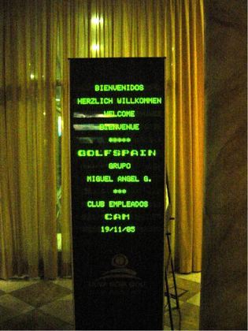
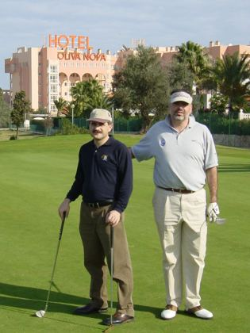
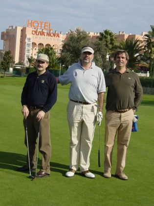
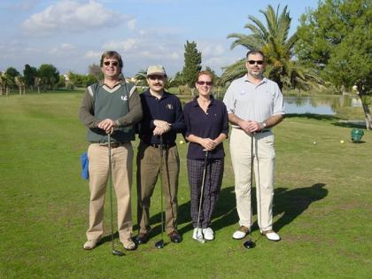
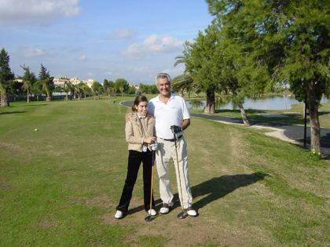
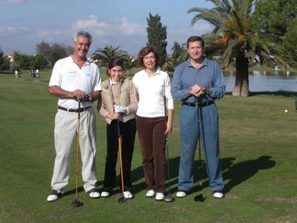
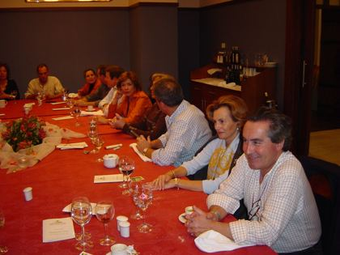
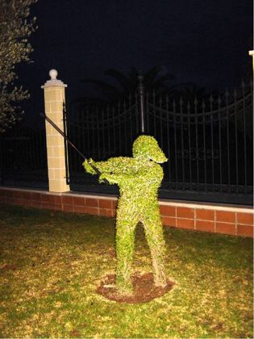

Temporada 2005 · XIII Campeonato
Palmarés
Según las circulares y las clasificaciones adjuntas de la temporada.
Campeonato de Apertura · Trofeo Express Truck
4 de junio · Club de Golf Soria · 16 jugadores · stableford con hándicap Tecnatom · un jugador, un premio (prima el scratch)
- 1.ºEmilio Bachiller92 golpes
- 2.ºJosé M. Mourín94 golpes
- 3.ºFernando Ortega95 golpes
- 1.ºGustavo Bollini35 puntos
- 2.ºEmilio Mínguez33 puntos
- 3.ªMª Carmen del Amo32 puntos
Emilio Bachiller también hizo 32, pero ya tenía el trofeo scratch.
Bola más cercana (hoyo 5): Maite Calderón y Fernando Ortega · Salida más larga (hoyo 17): Gloria Dolado y José M. Mourín.
XIII Campeonato de Golf de Tecnatom · La Liga
Nueve jornadas del 11 de junio al 27 de julio · stableford: seis mejores tarjetas · scratch: cuatro mejores (golpes sobre el par)
Empezó en el modesto nueve hoyos de Villa de Cuéllar (green fee de 12 €, «vestuarios con ducha; llevar toalla») y siguió por Retamares, la Hípica, Torrejón, La Dehesa y La Herrería. A la tercera jornada ya se había ido Juan Bros, y la nueva organización respondió con «16 jugadores, solo dos por debajo de los 30 y cinco que le han podido al campo, uno con 43». La semana siguiente, «a los cuarenta solo llegaron los termómetros». Para cerrar la clasificación hubo que «revolver entre los papeles de Juan» para encontrar los criterios de desempate. Regalo para los socios al corriente de la cuota: un juego de toallas del club.
- 1.ºClaudio Arévalo212 puntos
- 2.ºMiguel Ángel Guillén200 puntos
- 3.ºEmilio Bachiller199 puntos
- 1.ºFernando Ortega61 golpes
- 2.ºClaudio Arévalo61 golpes
- 3.ºEmilio Bachiller64 golpes
| # | Jugador | Cuéllar | Retam. | Retam. | RSHECC S | Torrejón | La Dehesa | RSHECC N | Retam. | Herrería | Total |
|---|---|---|---|---|---|---|---|---|---|---|---|
| 1 | Claudio Arévalo | · | 40 | 36 | 32 | 30 | 32 | 36 | 30 | 36 | 212 |
| 2 | Miguel Ángel Guillén | 33 | · | 39 | 20 | 31 | 31 | 24 | 32 | 34 | 200 |
| 3 | Emilio Bachiller | 36 | 34 | 31 | · | · | 29 | 39 | 30 | · | 199 |
| 4 | José L. Callejo | 32 | 34 | 38 | · | 33 | 26 | · | 36 | · | 199 |
| 5 | José L. Alonso | 23 | · | 31 | 32 | 30 | 33 | 28 | 38 | 24 | 192 |
| 6 | José L. Mendizábal | · | 30 | · | 29 | 31 | 34 | 26 | 35 | 21 | 185 |
| 7 | Rodrigo Gallardo | · | 22 | 32 | 23 | 37 | · | 35 | 34 | · | 183 |
| 8 | Fernando Ortega | 26 | 22 | 30 | 33 | 28 | 25 | 32 | 32 | 25 | 181 |
| 9 | José M. Mourín | · | · | · | 27 | 28 | 27 | 35 | 28 | 24 | 169 |
| 10 | Luis Hernández | · | 39 | · | 27 | · | 36 | · | 35 | 24 | 161 |
| 11 | Francisco Sánchez | 21 | 29 | 43 | 29 | · | · | 28 | · | · | 150 |
| 12 | José Mª Sánchez | · | 25 | 30 | · | · | 15 | 26 | 20 | 24 | 140 |
| 13 | Antonio Ponce | · | 28 | 29 | 28 | · | 23 | 22 | · | · | 130 |
| 14 | José L. Rembado | · | · | 38 | 29 | 29 | 22 | · | · | · | 118 |
| 15 | Javier Glez. Castro | · | 24 | 35 | · | 31 | · | 26 | · | · | 116 |
| 16 | Alberto Manrique | 39 | · | 37 | · | · | 34 | · | · | · | 110 |
| # | Jugador | Cuéllar | Retam. | Retam. | RSHECC S | Torrejón | La Dehesa | RSHECC N | Retam. | Herrería | Total |
|---|---|---|---|---|---|---|---|---|---|---|---|
| 1 | Fernando Ortega | 21 | 25 | 17 | 13 | 17 | 21 | 15 | 16 | 21 | 61 |
| 2 | Claudio Arévalo | · | 14 | 16 | 19 | 20 | 19 | 16 | 22 | 15 | 61 |
| 3 | Emilio Bachiller | 15 | 17 | 20 | · | · | 21 | 12 | 20 | · | 64 |
| 4 | Rodrigo Gallardo | · | 33 | 23 | 31 | 16 | · | 19 | 21 | · | 79 |
| 5 | José M. Mourín | · | · | · | 23 | 21 | 23 | 16 | 24 | 26 | 83 |
| 6 | José L. Callejo | 26 | 25 | 21 | · | 23 | 31 | · | 23 | · | 92 |
| 7 | José L. Alonso | 35 | · | 27 | 25 | 26 | 24 | 30 | 21 | 32 | 96 |
| 8 | Miguel Ángel Guillén | 29 | · | 23 | 39 | 28 | 29 | 38 | 31 | 27 | 107 |
| 9 | José L. Mendizábal | · | 33 | · | 32 | 29 | 27 | 36 | 28 | 40 | 116 |
| 10 | Luis Hernández | · | 28 | · | 36 | · | 27 | · | 30 | 39 | 121 |
AA Cup · Equipo Impar contra Equipo Par
15, 22 y 29 de septiembre · RSHECC · los 16 mejores de la Liga en dos equipos · match play
Era el formato aprobado en 2003 para sustituir al antiguo AA Match Play: fourball por parejas, greensome por parejas e individuales. Tras dos jornadas mandaba el Impar 4 a 3; en los individuales el Par ganó cinco de los ocho puntos. Gana el Equipo Par, 8 a 6: Miguel Á. Guillén, José L. Callejo, José L. Mendizábal, José L. Rembado, Alberto Manrique, Mª Carmen del Amo, Antonio Alonso y Antonio Bravo. Es el antecedente directo de la Ryder Cup que el club juega hoy cada septiembre.
| Jornada | Equipo Impar | Resultado | Equipo Par |
|---|---|---|---|
| 1.ª fourball | C. Arévalo y F. Sánchez | 1 – 0 | J. L. Callejo y A. Manrique |
| E. Bachiller y E. Mínguez | 0 – 1 | A. Alonso y A. Bravo | |
| J. L. Alonso y J. M. Mourín | 0 – 1 | J. L. Mendizábal y J. L. Rembado | |
| R. Gallardo y F. Ortega | 1 – 0 | M. Á. Guillén y Mª C. del Amo | |
| 2.ª greensome | R. Gallardo y F. Ortega | 0 – 0 | J. L. Callejo y A. Manrique |
| C. Arévalo y F. Sánchez | 1 – 0 | J. L. Mendizábal y J. L. Rembado | |
| E. Bachiller y E. Mínguez | 0 – 1 | M. Á. Guillén y Mª C. del Amo | |
| J. L. Alonso y J. M. Mourín | 1 – 0 | A. Alonso y A. Bravo | |
| 3.ª individual | C. Arévalo | ½ – ½ | M. Á. Guillén |
| E. Bachiller | 0 – 0 | J. L. Callejo | |
| J. L. Alonso | 1 – 0 | J. L. Mendizábal | |
| R. Gallardo | 0 – 1 | A. Bravo | |
| J. M. Mourín | 0 – 1 | A. Manrique | |
| F. Sánchez | ½ – ½ | Mª C. del Amo | |
| F. Ortega | 0 – 1 | J. L. Rembado | |
| E. Mínguez | 0 – 1 | A. Alonso | |
| Total | 6 – 8 |
Juegos de Otoño · Memorial Juan Antonio Moreno
15 de octubre · Base Aérea de Torrejón · récord de participación: seis partidos
- 1.ºJosé M. MourínScratch
- 2.ºSantiago San AntonioScratch
- 1.ºJosé L. MendizábalStableford
- 2.ºMiguel Ángel GuillénStableford
- 1.ºJuan BrosCaballeros
- 1.ªCristina ThomasDamas
XI Open de Tecnatom · Trofeo Hispania Service
19 de noviembre · Oliva Nova Golf (Valencia) · cierre de la temporada
- 1.ºEmilio Bachiller88 golpes
- 2.ºFernando Ortega94 golpes
- 1.ºAlberto Manrique36 puntos
- 2.ºLuis Hernández35 puntos
- 1.ªRocío Bachiller32 puntos · damas
- 2.ªGloria de Armas26 puntos · damas
Golpe más largo: Elena Pedrazuela y Fernando Ortega · Bola más cercana: Juan Bros.
Las circulares lo llaman unas veces XI y otras IX Open; por la numeración de los años anteriores (V en 1999, IX en 2003) le corresponde el XI.








Camino de Saint Andrews
El «viaje de nuestras vidas», preparado durante todo 2005
En mayo el club se propuso organizar «el que muy bien podría ser, en términos golfísticos, el viaje de nuestras vidas: jugar en el Old Course de Saint Andrews». Se enviaron tres solicitudes, porque Saint Andrews solo admitía ocho jugadores por cada una, y en octubre llegó la respuesta por correo postal: «A la vista del nivel exhibido en la temporada, el Comité de St Andrews se ha visto obligado a admitir nuestra solicitud».
| Grupo | Lunes 15 de mayo de 2006 | Martes 16 de mayo de 2006 |
|---|---|---|
| Fernando Ortega | Jubilee · 12:08 y 12:16 | Old Course · 15:20 y 15:30 |
| Juan Bros | Jubilee · 12:40 y 12:48 | Old Course · 15:40 y 15:50 |
| Miguel Á. Guillén | New Course · 7:50 | Old Course · 16:00 |
El club en 2005
- Relevo en la organización. Juan Bros, alma del club desde los años noventa, se marchó a Tarragona: «tened por seguro que valoro todos los [recorridos] disfrutados hasta ahora como si de hoyos en uno se hubiesen tratado». Le relevaron Miguel Á. Guillén y Fernando Ortega.
- Cuota de 30 € para quienes jugaran con regularidad; daba derecho a los premios de los campeonatos sin patrocinador y a los regalos del club.
- Carros eléctricos. Antes de empezar la temporada el club negoció una compra conjunta, a 300 € el carro.
- La web. Se pidió enlazarla desde Keops, el portal del empleado; tras el relevo la nueva organización reconoció que no había podido retomar su actualización.
- Cádiz Golf. Estaba previsto un primer encuentro con el Club Cádiz Golf; el archivo no recoge que llegara a celebrarse.
Página completada en octubre de 2026 a partir de las circulares #01/05 a #25/05, la circular #01 de Saint Andrews 2006, las clasificaciones de la Liga y la AA Cup y la hoja de resultados de la Apertura.